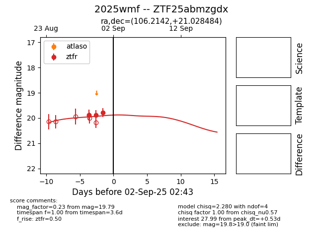

FINK: ZTF25abmzgdx
Lasair: ZTF25abmzgdx
ALeRCE: ZTF25abmzgdx
TNS: 2025wmf
YSE: 2025wmf
ZTF25abmzgdx (ztf,fink)
2025wmf (tns,yse)
equatorial (ra, dec) = (106.2142,+21.02848)
galactic (l, b) = (195.3954,+12.25324)

last ztfr=19.79
3 ztfr detections